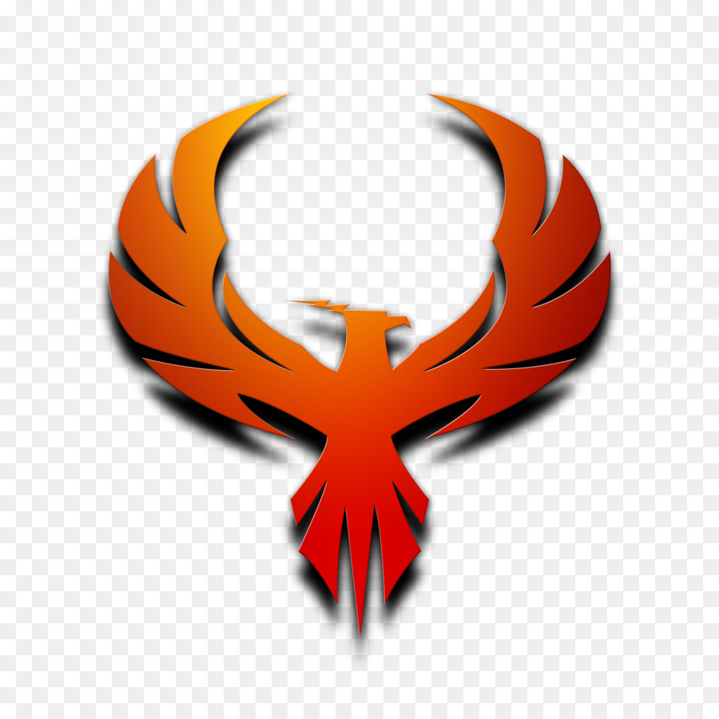

<mat-sidenav-container class="sidenav-container">
  <mat-sidenav #drawer class="sidenav" fixedInViewport="true"
      [attr.role]="'navigation'"
      [mode]="'over'"
      [opened]=false>
    <mat-toolbar>
      <span style="margin-left: 50px;">Tech wings</span> 
    </mat-toolbar>
    <mat-nav-list>
      <a mat-list-item routerLink="/portfolio">portfolio</a>
      <a mat-list-item routerLink="/Publish">Publish your stories</a>
      <a mat-list-item routerLink="/notes">notes</a>
      <a mat-list-item routerLink="/technicalLearning">Technical Learning Space</a>
      <a mat-list-item routerLink="/trending">Top Trending</a>
      <a mat-list-item routerLink="/articles">View articles</a>
    </mat-nav-list>
  </mat-sidenav>
  <mat-sidenav-content>
    <mat-toolbar>
      <button
        type="button"
        aria-label="Toggle sidenav"
        mat-icon-button
        (click)="drawer.toggle()">
        <mat-icon aria-label="Side nav toggle icon">menu</mat-icon>
      </button>
      <span>demo-ui</span>
      <span class="userMenu">
        <button class="mat-icon-button" mat-button routerLink="/Landing"><mat-icon>home</mat-icon></button>
        <button class="mat-icon-button" mat-button [matMenuTriggerFor]="menu"><mat-icon>account_circle</mat-icon></button>
        <mat-menu #menu="matMenu">
          <button mat-menu-item>Profile</button>
          <button mat-menu-item routerLink="/signin">Signout</button>
        </mat-menu>
      </span>
    </mat-toolbar>
    <!-- Add Content Here -->
    <router-outlet></router-outlet>
  </mat-sidenav-content>
</mat-sidenav-container>

